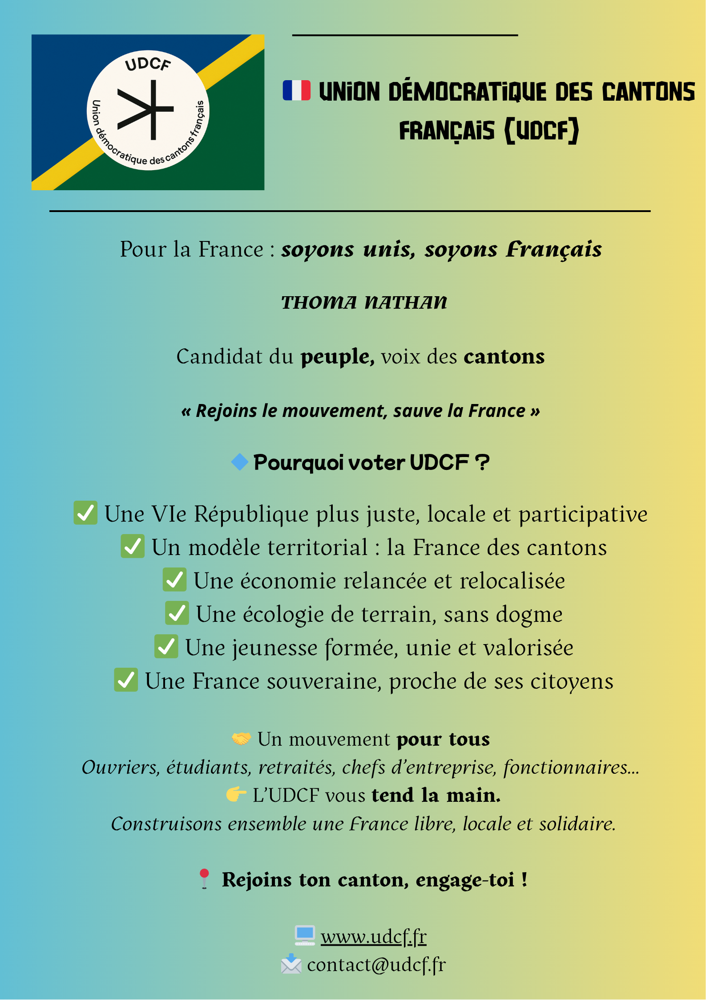
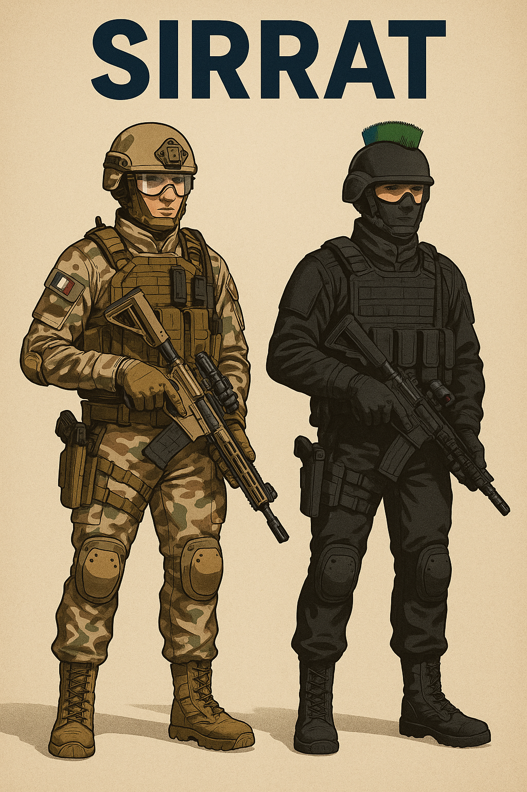
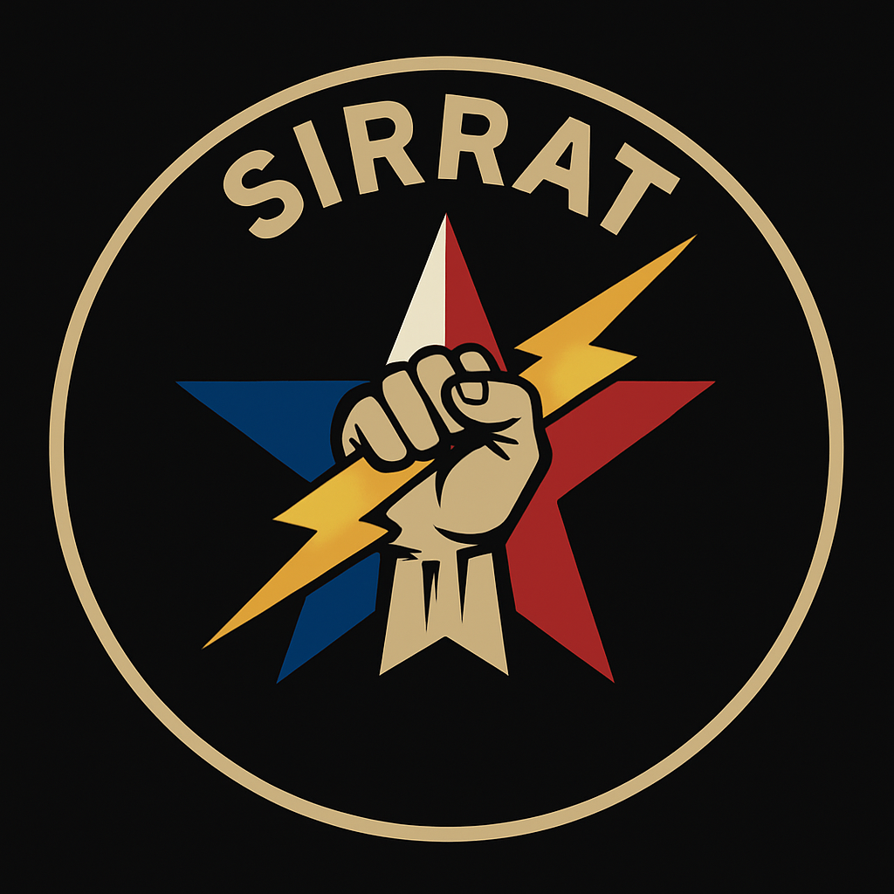

Retrouvez ici quelques visuels clés du mouvement :

Présentation de l'UDCF
"Pour la France : soyons unis, soyons Français."
L’Union Démocratique des Cantons Français (UDCF) est un mouvement politique citoyen et populaire, né de la volonté de rendre à la France sa force, sa dignité et sa cohésion territoriale. Nous croyons en une démocratie plus proche du peuple, plus juste, et plus ancrée dans la réalité locale.
Notre ambition : rebâtir la République pour qu’elle serve réellement les Français.
🇫🇷 Ce que nous défendons :
Une refondation démocratique à travers la VIe République, moderne, équitable et participative.
Un nouveau modèle territorial : la France des cantons, regroupements de communes pour des décisions locales efficaces.
Une France forte, avec une justice sociale réelle, un SMIC revalorisé, et une industrie relancée.
Un accès simplifié à la formation, à l’emploi, à la mobilité et aux services publics.
Une relocalisation et une relance de l’économie : textile, métallurgie, agriculture naturelle, mécanique, etc.
Une transition énergétique pragmatique (hydrogène, GNC, éthanol...) sans dogmatisme.
Une politique écologique du concret : plus de nature, de transports doux et de sobriété intelligente.
Une reconnaissance des identités régionales et ultramarines, dans le respect de la nation.
Un service citoyen repensé pour former, protéger et unir les jeunes générations.
Une France souveraine, où les décisions ne viennent plus de Paris mais du peuple.
🔵 Un mouvement pour tous
L’UDCF rassemble ouvriers, étudiants, retraités, chefs d’entreprise, citoyens de tous horizons. Ce mouvement est le vôtre.
✊ Notre mission
Un nouveau modèle français : local, libre et solidaire.
Avec des institutions rénovées, un tissu économique fort, et une France réconciliée, tout devient possible.
🔗 Rejoignez-nous
Participez à une nouvelle page de l’histoire. Adhérez à l’UDCF, bâtissez votre canton, engagez-vous pour la France !
L'équipe
Thoma Nathan
Président fondateur
Marie Lefevre
Porte-parole nationale
Section d’Intervention et de Résilience Rapide de l’Armée de Terre
🇫🇷 SIRRAT
🔰 Présentation Générale
La SIRRAT est un corps d’élite unique de l’Armée de Terre française, créé légalement sous mandat républicain suite à l’arrivée au pouvoir démocratique de l’UDCF.
Elle incarne une nouvelle doctrine militaire française : polyvalente, autonome, ultraréactive.
Inspirée des forces spéciales, de la Légion étrangère, et des groupes de guérilla urbaine modernes, la SIRRAT se distingue par sa résilience extrême, son adaptabilité à tous les théâtres d’opération, et sa fraternité de combat indéfectible.
🛡️ Valeurs Fondamentales
Résilience absolue : Les soldats sont formés pour survivre, combattre et triompher dans toutes les conditions.
Loyauté et Fraternité : « On n’abandonne jamais un camarade » — l’un des principes sacrés de la section.
Polyvalence opérationnelle : Chaque opérateur peut remplir plusieurs rôles selon la situation.
Éthique et discipline : Droits humains, règles d'engagement strictes et honneur du drapeau.
🌍 Recrutement & Ouverture
Ouvert à tous : Citoyens français et étrangers volontaires, sur le modèle de la Légion étrangère, peuvent postuler à condition de passer les tests rigoureux.
Redemption et mérite : La SIRRAT peut offrir une seconde chance à ceux qui cherchent à se racheter par l’honneur et le service.
L’identité de la SIRRAT repose sur une diversité unifiée : quelles que soient l’origine, la culture ou la langue, l’uniforme lie tous les membres dans un seul corps.
🛠️ Organisation Structurée et Multicorps
La SIRRAT est structurée en plusieurs branches complémentaires :
Infanterie spéciale : cœur de la SIRRAT, experte en guérilla urbaine, combat rapproché, infiltration et reconnaissance longue durée.
Section motorisée et blindée : équipées de blindés légers, MRAP, VBL, et véhicules tactiques rapides pour l’appui lourd et les raids profonds.
Branche aérienne : drones de combat, drones cargo, hélicoptères légers et unités d’appui aéroporté.
Unité SIRRAT-I : spécialisée dans la protection du territoire français (missions de type Sentinelle, contre-terrorisme, actions préventives).
⚔️ Capacités Opérationnelles Uniques
La SIRRAT est conçue pour opérer dans tous les environnements, même les plus extrêmes :
Parachutages de haute altitude en pleine tempête ou en terrain désertique.
Opérations de survie et de combat en jungle, désert de glace, montagnes hostiles ou zones inondées.
Engagements en conditions extrêmes : ouragans, tempêtes de sable, conflits urbains sous feu constant.
Chaque opérateur est entraîné à survivre seul s’il le faut, à improviser, à infiltrer, à frapper, et à revenir.

Tenue d'OPEX / SIRRAT-I

Insigne SIRRAT
🎖️ Uniforme et Symboles
Tenue OPEX : camo beige clair, kaki et brun clair avec protections balistiques renforcées.
Tenue de garnison / SIRRAT-I : uniforme sombre (gris foncé ou noir), casque distinctif profilé avec crête en aluminium ornée de poils bleu roi, jaune et vert — les couleurs de l’UDCF.
Insigne : un poing stylisé tenant un éclair, sur fond d’étoile tricolore — symbolisant la force, la vitesse et l’engagement pour la nation.
🌐 Rôle Géopolitique et Rayonnement
Outil de souveraineté et d’influence militaire française à l’international.
Potentiel de devenir un corps d’élite mondialement reconnu, demandé pour des missions conjointes ONU, OTAN, ou en coopération bilatérale.
Peut rivaliser, voire surpasser, les forces comme les Marines US ou les SAS britanniques, par leur polyvalence extrême.
🏛️ Objectifs à long terme
Intégration totale et stable dans l’Armée française.
Création d’un centre de formation international pour entraîner des unités alliées ou partenaires.
Développement d’une doctrine propre : la doctrine SIRRAT, axée sur l’intervention résiliente, la guerre hybride et l’éthique du combattant moderne.
Calendrier des manifestations
15 juillet 2025 : Réunion publique à Lyon
22 juillet 2025 : Débat citoyen à Lille
🇫🇷 Programme de l’Union Démocratique des Cantons Français (UDCF)
« Pour la France : soyons unis, soyons Français. »
1. 🔵 Refondation démocratique : vers la VIᵉ République
Instauration d’une VIᵉ République participative et territoriale
Référendums citoyens cantonaux et nationaux plus accessibles
Équilibre renforcé des pouvoirs (fin de l’hyperprésidence)
Création d’une Cour des territoires pour protéger les collectivités
2. 🏛️ Nouvelle organisation territoriale : la France des Cantons
recentrage sur les régions alors découpées en cantons
Certaine autonomie cantonal permettant à tous de participer à la gestion de chez sois
Regroupements de communes cohérents et équitables
Budgets décentralisés, votés localement avec contrôle citoyen
Plus de proximité entre élus et citoyens
3. ⚙️ Relance économique et souveraineté industrielle
Relocalisation et re-lancement des industries essentielles (textile, sidérurgie, malterie, mécanique, énergie...)
Plan de soutien aux PME cantonales
Nationalisation stratégique de secteurs-clés
Préférence locale dans les appels d’offres publics
4. 🌱 Transition énergétique pragmatique
Investissements dans l’hydrogène, le GNC, l’éthanol
Modernisation des réseaux (électriques, ferrés, ruraux)
Soutien aux transports doux et collectifs en zones rurales
Fin des logiques punitives, écologie concrète et de bon sens
5. 🧑🌾 Agriculture, ruralité et alimentation
Soutien aux petites exploitations et circuits courts
Interdiction progressive des intrants chimiques destructeurs
Création de marchés cantonaux garantissant juste rémunération
Développement du service agricole citoyen
6. 💼 Travail, dignité et justice sociale
Revalorisation du SMIC à 1600 € net dès la première année (adapté au danger du métier)
Indexation automatique des salaires sur l’inflation
Suppression des contrats ultra-précaires
Renforcement du droit du travail et des contrôles de l’inspection
7. 🏥 Services publics pour tous
Réouverture de petites lignes SNCF, écoles et hôpitaux
Garantie d’un service public à moins de 20 minutes pour chaque citoyen
Création de maisons cantonales des services publics
Réduction des écarts entre zones rurales et métropoles
8. 🎓 Jeunesse, formation et service citoyen
Formation gratuite et rémunérée dans chaque canton
Rénovation complète du système éducatif
Mise en place d’un service citoyen court, formateur et local
Encouragement au volontariat, à l'engagement associatif et territorial
9. 🌍 Identité, culture et unité nationale
Respect des identités régionales et ultramarines
Promotion du patrimoine local, des langues et fêtes régionales
Défense ferme des valeurs républicaines et de la laïcité
Lutte contre les séparatismes par l’unité populaire, non par la répression
10. 🇫🇷 Souveraineté populaire & indépendance nationale
Rétablissement de la souveraineté législative et économique
Priorité au Made in France et à la décision française
Défense nationale renforcée dans un cadre citoyen
🔧 Réforme de la justice, de la lutte contre les agressions et des disparitions
⚖️ 1. Refonte Générale de la Justice
Refonte complète des sanctions pour un système plus ferme, cohérent et dissuasif, avec une hiérarchisation plus claire des peines.
Simplification et accélération des procédures judiciaires : réduction des délais entre plainte et jugement, développement de tribunaux spécialisés selon les infractions (agressions, enlèvements, récidives).
Numérisation totale des procédures judiciaires et création d’un portail interservices sécurisé pour l’échange des données entre magistrats, forces de l’ordre et ORACLE.
Création d’une juridiction spéciale d’urgence pour les cas d’agressions, d’enlèvements ou de menaces graves nécessitant une action judiciaire accélérée.
Obligation d’un casier judiciaire vierge pour l’exercice de certaines professions sensibles (éducation, soins, sécurité, etc.).
🧬 2. ORACLE : Organisme de Renseignement et d’Analyse Criminalistique en Lien Élargi
Mission principale : analyser, centraliser et croiser toutes les données biologiques, numériques, judiciaires et comportementales relatives aux affaires graves (enlèvements, viols, agressions, meurtres).
Connexion directe aux hôpitaux, centres de sang et services de médecine légale pour l’identification rapide via l’ADN.
Algorithmes de géolocalisation, de reconnaissance comportementale et d’analyse prédictive en cas de disparitions.
Système national d'empreintes génétiques, de semences, d'empreintes digitales et de profils comportementaux.
Base de données interservices accessible en temps réel par les unités autorisées.
Visuel institutionnel : Logo circulaire gris clair, bordé bleu-blanc-rouge. Icône centrale symbolisant la justice, l’espoir (fleurs vertes) et la contrainte légale (menottes). Nom « ORACLE » intégré dans le visuel.
🚨 3. CGAD : Cellule de Gestion des Agressions et Disparitions
Déclenchée uniquement par le capitaine de brigade locale lorsqu’un acte grave est signalé (enlèvement, agression sexuelle, séquestration, etc.).
Dès activation : déploiement immédiat des GIRAA-2A, notification automatique d’ORACLE, envoi sur zone d’experts légistes, analystes ADN, drones thermiques et caméras portables.
⚔️ 4. GIRAA : Groupes d’Intervention Rapide Anti-Agression
GIRAA-2A (Analyse & Action) : entrent en action dès le déclenchement d’une CGAD. Composés d’analystes, experts en cyber-surveillance, opérateurs drones, etc.
GIRAA-P.A (Patrouilles d’Action) : unités de terrain hautement mobiles en véhicules adaptés, formées au combat rapproché et à l'appui tactique rapide.
🏛️ 5. Modernisation des infrastructures judiciaires & pénitentiaires
Réhabilitation des commissariats, gendarmeries, tribunaux et prisons.
Création de centres de justice ultra-sécurisés avec tribunaux intégrés.
Établissements pénitentiaires divisés selon profils (primo, récidivistes, criminels graves).
Brigades judiciaires mobiles pour justice itinérante dans zones rurales ou sensibles.
🔬 6. Technologies et innovations au service de la justice
Drones à vision thermique et infrarouge pour localisation.
Détection ADN/semences en urgence dans les 2h après plainte.
Traçage en temps réel de téléphones, véhicules et CB des suspects.
Simulateurs 3D de reconstitution pour juges et jurés.
🎯 Objectifs globaux
Réduction du taux d’impunité.
Gain d'efficacité et hausse des condamnations justifiées.
Rétablissement de la confiance dans la justice.
Dissuasion renforcée et protection des victimes.
Coordination totale entre sécurité, justice et renseignement.
🇫🇷 Réformes Culturelles, Cérémonielles et du Calendrier
L’UDCF souhaite instaurer une nouvelle dynamique républicaine et identitaire forte, en restructurant les jours fériés, les périodes de vacances et les célébrations nationales. Le but est de renforcer l’unité, l’histoire et l’identité de la France tout en prenant en compte les réalités territoriales.
📅 Nouveau Système de Vacances et de Jours Fériés
Découpage du territoire métropolitain
La France métropolitaine est divisée en deux zones, séparées au niveau de Lyon, qui appartient à la Zone SUD.
Le Sud part en vacances une semaine avant le Nord, en alternance régulière selon le calendrier national.
Jours fériés nationaux obligatoires (8 jours fixes pour tous)
1er janvier – Jour de l’an
1er mai – Fête du Travail
8 mai – Commémoration de la Victoire de 1945
6 juin – Commémoration du Débarquement
14 juillet – Fête nationale
11 novembre – Armistice 1918
13 novembre – Hommage aux victimes du terrorisme
25 décembre – Noël
Jours fériés régionaux (jusqu’à 5 jours)
Chaque région métropolitaine pourra, via ses conseils cantonaux régionaux, définir jusqu’à 5 jours fériés locaux (ex. : fêtes historiques ou culturelles spécifiques à la région).
DOM-TOM
Les territoires d’outre-mer disposeront de calendriers scolaires et fériés adaptés à leurs réalités climatiques, culturelles et historiques.
🎖️ Réforme des Défilés Nationaux
Défilé du 14 juillet – Nouvelle organisation
Ouverture solennelle avec :
Le Président de la République à cheval, escorté par la Garde Républicaine.
Un char Leclerc ou VBCI en tête, suivi de la gendarmerie en formation triangle.
Le convoi présidentiel encadré par des unités motorisées, puis un second blindé en fermeture.
Troupes étrangères invitées, positionnées en honneur sur le côté après leur passage initial.
Défilé aérien évolué :
Passage des Alpha Jet
Spectacle aérien : combats simulés, acrobaties
Parachutage d’un régiment depuis un A400M
Le régiment atterrit, avance en formation, porte les drapeaux, chante la Marseillaise, puis salue officiellement le Président (bras tendu à gauche, poing fermé)
Défilé terrestre :
Troupes de volontaires
Jeunes du Service militaire obligatoire (16–21 ans)
Corps formés dans les formations militaires intégrées aux services civils (police, pompiers, etc.)
Armées (SIRRAT, Terre, Air, Mer)
Pompiers, gendarmerie et unités spécialisées
Sécurité civile
Vétérans clôturant le cortège
Clôture spectaculaire :
Des hélicoptères légers s’alignent et déploient des cordes.
Les parachutistes initiaux remontent à la corde.
Des drapeaux géants français sont ouverts sous les hélicos, qui réalisent un dernier passage d’honneur.
Défilé du 8 mai – Cérémonial historique
Version plus réduite et centrée sur la mémoire et les anciens combattants.
Véhicules historiques de la Seconde Guerre mondiale mis à l’honneur.
Remise de médailles, récits de guerre, chants militaires, et respect des anciens.
Stratégie nationale d’intégration et de redynamisation : le modèle UDCF
🔹 Un système d'intégration moderne et humain
CMN (Centres de Mise à Niveau) : pour les personnes entrées illégalement mais aptes à travailler. Formation intensive de 3 mois au français, à l’histoire de France et aux valeurs républicaines. Accompagnement professionnel, formation ou VAE, puis insertion surveillée pendant 1 an.
CRO (Centres de Réforme Obligatoire) : pour les profils inéligibles à un emploi immédiat. Formation à la vie quotidienne, éducation civique et linguistique. Obtention du BAVQ (Brevet d’Aptitude à la Vie Quotidienne) conditionnant un visa temporaire.
Camps d’attente : solution temporaire pour les personnes en attente de traitement. Conditions dignes et encadrement structuré
🔹 Une répartition équilibrée et intelligente
Orientation vers les régions en déclin.
Logement temporaire à la sortie des centres, 3 mois max.
Partenariat avec entreprises nationalisées, quotas de recrutement.
🔹 Un retour au travail pour tous
Pour les sans-abri : réinsertion par VAE liée à leur expérience.
Pour les chômeurs longue durée : formation/emploi obligatoire sous 48 jours, pénalités sur aides, réintégration CMN si besoin.
🔹 Un équilibre pour les Français d’origine
Priorité nationale au logement, emploi, formation pour tous les Français.
Personne ne doit se sentir oublié dans ce modèle de justice sociale.
🟢 Objectif : relancer l’économie, apaiser la société
Réduction du chômage par la création de travailleurs formés.
Réindustrialisation via secteurs clés nationalisés (textile, sidérurgie…)
Revenus supplémentaires estimés : 10–16 Mds€/an à long terme.
Gestion humaine et structuré de l’immigration.
⚖️ Un modèle juste, efficace et durable
Ce plan replace la justice sociale et la souveraineté nationale au cœur de la politique. Sécurité, dignité, prospérité : chaque individu devient acteur de la renaissance nationale.